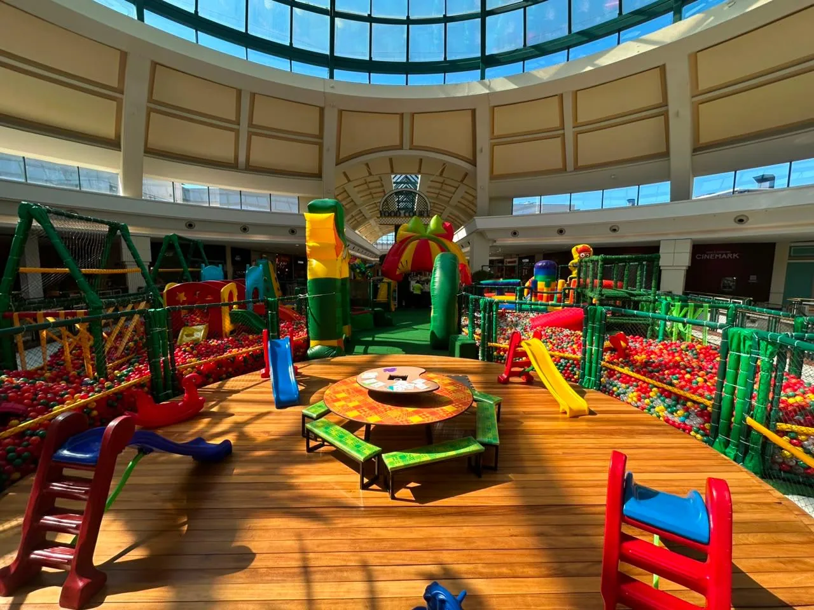
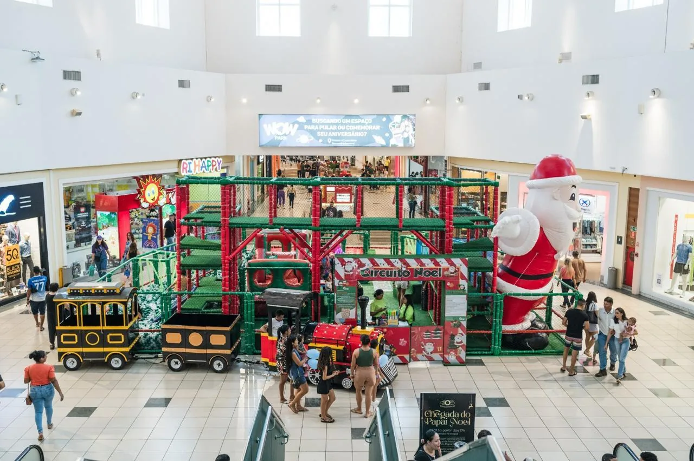
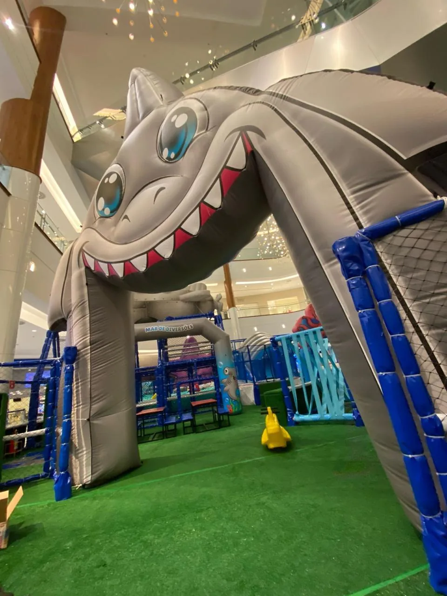
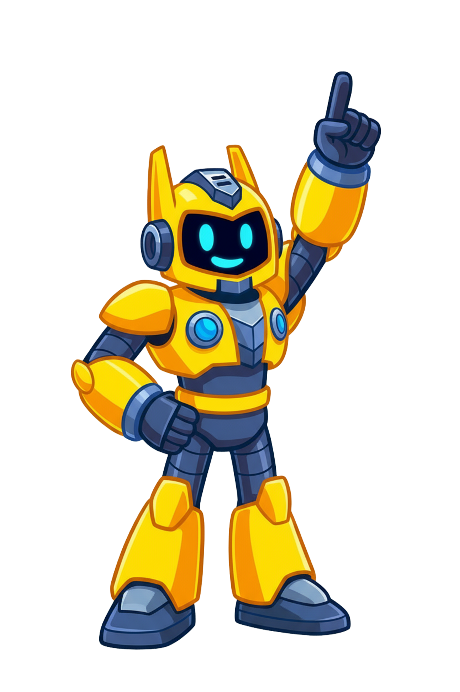
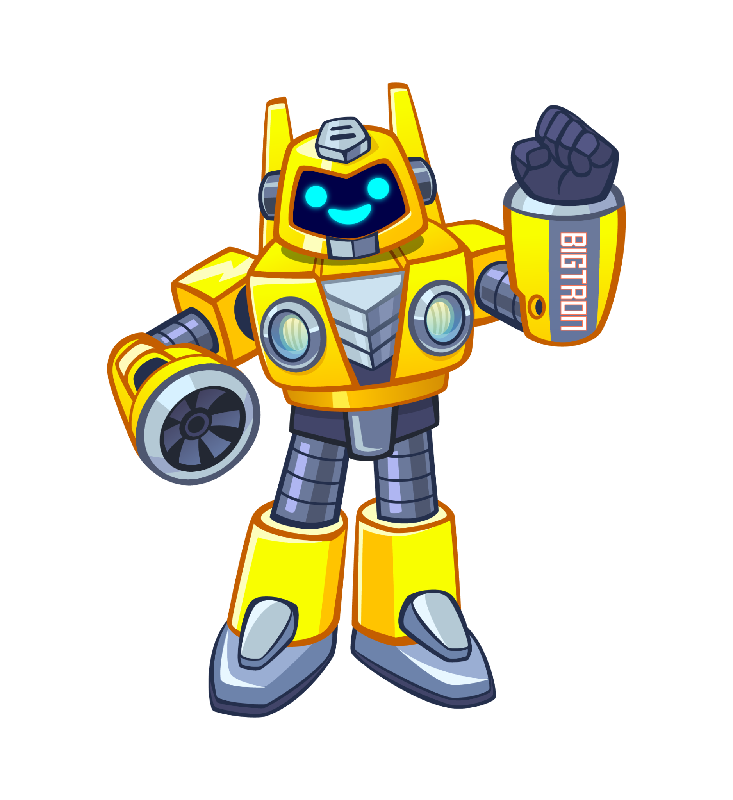
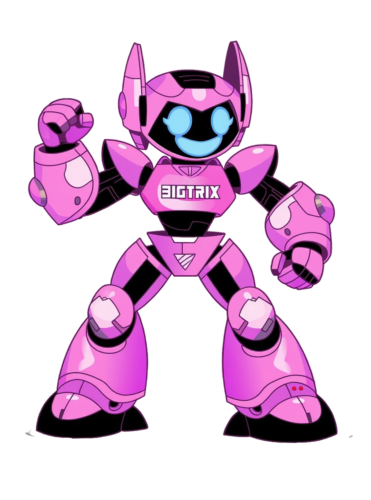
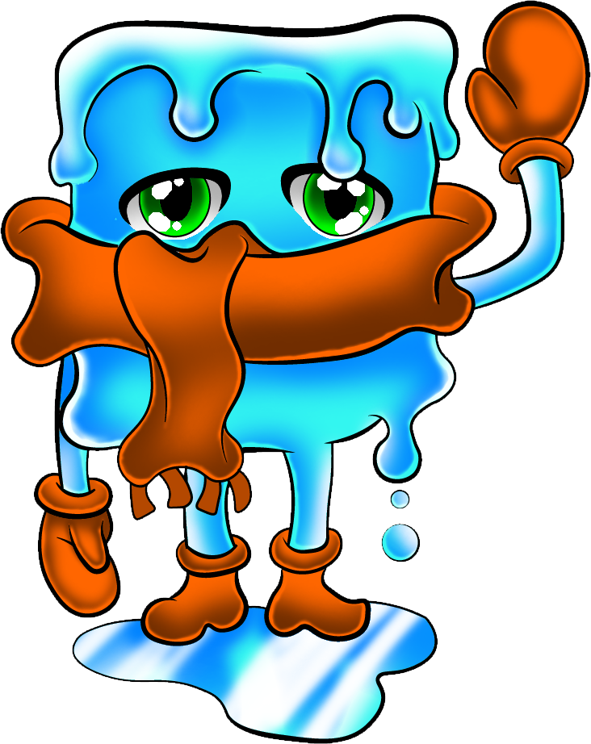
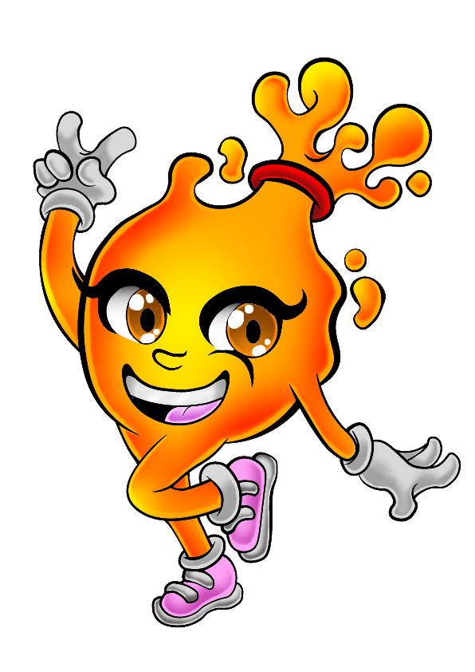
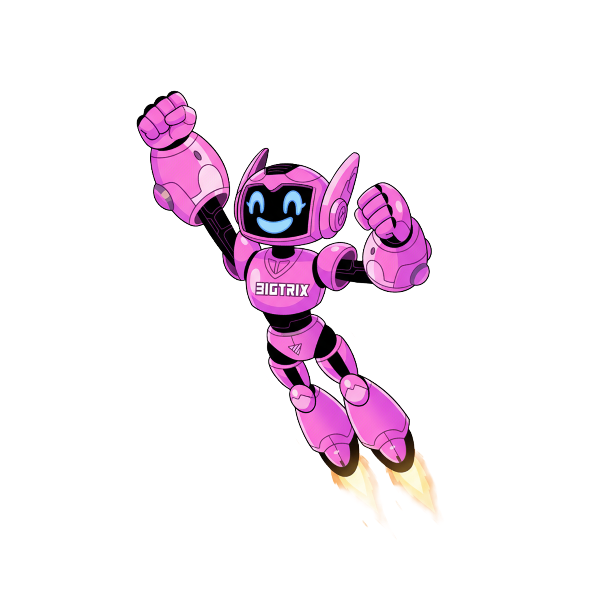

Projetotema, leitura do espaço e experiência
Projetos reais • temas diferentes • operação Safári ✦
Uma galeria com
Uma galeria com
mais cor, mais variedade
e mais histórias.
Eventos itinerantes, temporadas especiais, projetos licenciados e formatos que se adaptam a diferentes espaços de shopping. Aqui o foco é mostrar a variedade do portfólio sem transformar tudo no mesmo parque.
🎪 Itinerantes🎄 Sazonais✨ Temáticos🤝 Licenciados




Uau!Implantaçãoprodução, logística e montagem
Operaçãoequipe, rotina e acompanhamento
Galeria de projetosUma seleção com
Uma seleção com
vários tipos de experiência.
As fotos abaixo mostram formatos diferentes do portfólio. Projetos licenciados aparecem identificados como cases; os personagens da Safári continuam sendo apresentados separadamente como identidade própria da marca.
✦
Cada quadro mostra um projeto diferente. Clique em qualquer foto para ampliar.
Identidade SafáriProjetos mudam.
Projetos mudam.
A nossa identidade continua viva.
Bigtron, Bigtrix, Gelo e Lava fazem parte do universo autoral da Safári. As artes abaixo são utilizadas exatamente nas características originais fornecidas pela marca.
Conhecer a empresa →



Muito além da foto prontaQuer conhecer mais
Quer conhecer mais
sobre a Safári?
Criação, produção, logística, montagem e operação fazem parte da história por trás de cada parque.
